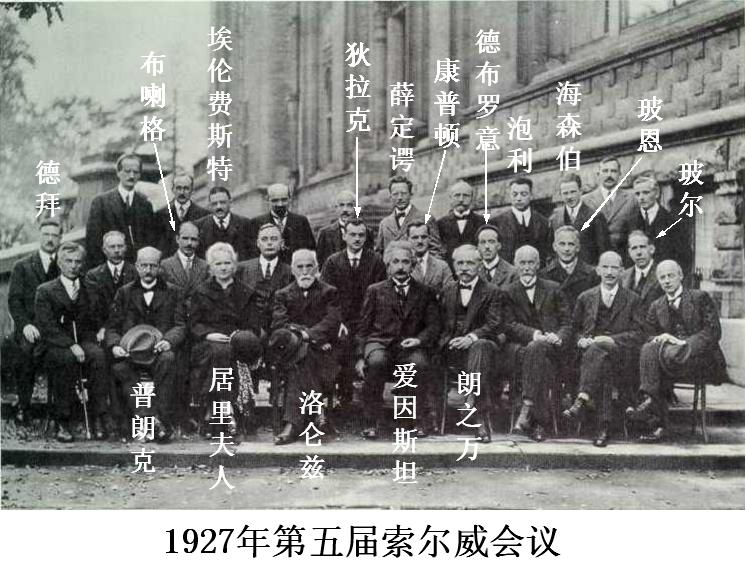
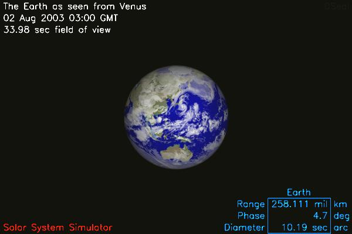
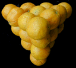

前美国数学会主席，前国际杂耍协会主席，Ronald Graham 讲述 杂耍与数学的关系。
著名计算机科学家 Alan J. Perlis 有名的关于计算机编程的警 句。
有人认为世界上的一切事实必然有它的原因，看了这本书，你可 能会有另外一种想法。
收集了很多常见的认识错误。比如：


看看从金星看地球是什么样子？呵呵。你还可以从冥王星看天王星 :)
一个有趣的 Voronoi 图的应用。用动画形式的 Voronoi 图(Java Applet) 来证明开普勒猜想的 2D 形式。
开普勒猜想说起来简单：最大密度的堆放球体的方式就是水果摊 上堆放橙子的方式(俯视图)：

可是这个看起来简单的命题，在提出以后 300 年才有人证明出一 个 2D 的形式。400 年后的 1998 年，3D 形式由 Hales 证明。可是 这个证明之复杂，堪称数学史上之最。1998 年的证明发表之后， Annals of Mathematics 组织数学家们在 1999 年开了一次大会，专 门讨论如何理解这个证明。后来成立了一个 12 人小组来验证这个证 明的正确性。
整整四年以后，小组总裁判才宣布，我们认为这个证明有 99% 的 可能性是正确的。倒霉的裁判们几乎用尽了自己心血，却没能 100% 的确认证明的正确性！Nature 特别报道了这个消息，这里有一个拷贝。看看那些水果摊主们得意的样 子 :P
Hales 不满意这个结果，他开设了一个项目Flyspeck ，想完全依靠计算机来验证他的结果。他估计这个项目需要 20 人年 才能完成。等到那一天，我们就可以知道我们堆放橙子的方法是不是 正确的了。呵呵！
图片中德语意思为：“一个 open source 操作系统不只具有优 点。” 刊登于 2000.10.23 的德语杂志 c't。 图片来自 Hal Abelson 教授的主页。
一个 Java 程序。可以模拟确定性有限自动机，非确定性有限自 动机，图灵机。
一个演示很多排序算法的 Java Applet. 非常漂亮。
一首 LISP 的歌，你能猜出它是由哪首歌曲改编的吗？音乐文件 可以在这里下载 。
看看《道德经》被翻译成什么样子了。呵呵！
搞笑版。呵呵。
Princeton 大学的心理学家，语言学家和计算机工程师联合设计的一种基于 认知语言学的英语词典。它不是光把单词以字母顺序排列，而且按照单词的意义 组成一个“单词的网络”。
拿战争贩子出口气。呵呵。
你想看就自己看吧…… 第一次看的时候我的脸有点受不了。hoho！
一个非常漂亮的幻灯片。
一个朋友转发来的东西，很好笑 :)
IOCCC(The International Obfuscated C Code Contest), 是一个奇特的专门比赛谁的程序能够让人看不懂但是又有很神奇的效果的比赛。他们的网站上有很多很多奇怪的程序，但是很多人不知道这些程序怎么使用。这里介绍一下我知道的那些奇妙的程序。
PostScript (简称PS) 是非常强大的页面描述语言。这种语言一般都是程序生成的，而不是人写的。这里有我亲手写的一些有意思的PS文件，写它们的时候我几乎变成一个机器人 :P
我只收录曾经使两人以上笑得地上滚的笑话，所以数量很少。也好，免得笑破肚皮 :)
我从来没见过这么好玩的东西，画的好“传神”！你可以下载回去慢慢看。
很特别啊！这是一个很酷的滑板动作！
{kind=link}
{kind=link}
{kind=link}
{kind=link}